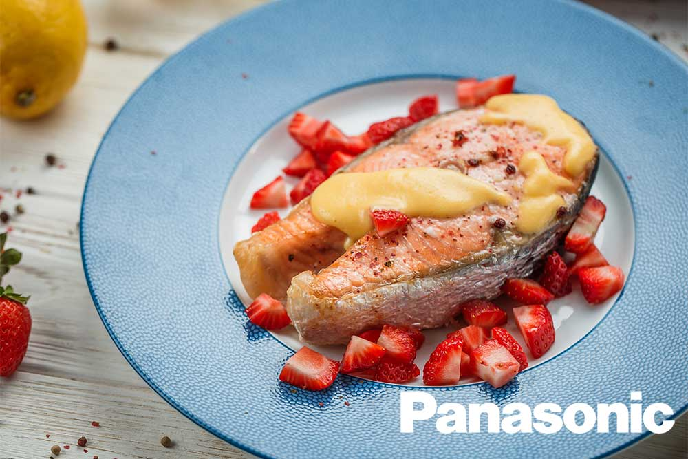

Страви
Так повелося, що сьомгу і форель сім’ї лососевих ми звикли називати просто лососем.
Я теж не буду морочитися і поділюся з вами рецептом божественного стейка лосося з найніжнішим соусом голландез і полуницею.
Ця риба справді універсальна і смачна у будь-якому вигляді. Цього разу я пропоную запекти лосось у паровій печі або в духовці.
Все швидко і просто!

Інгредієнти
- 1 шт. Лосось
- ½ шт. Лимон
- 1 ст. л. Соняшникова олія
- 3-5 шт. Полуниця
- 1 дрібка Рожевий перець
- за смаком Сіль
- Готовий стейк лосося полийте соусом і подавайте з полуницею, як це зробив я на свій смак. А можете і опустити цей крок, все одно смак буде божественним.
Соус
- 2 шт. Яєчний жовток
- 1-2 ст. л. Сік лимону
- 50 г Вершкове масло
- за смаком Сіль та перець
Приготування
- Стейк лосося (200-300 г) обсушити паперовим рушником і покладіть на деко для запікання, покритий пергаментом. З двох сторін притрусіть стейк сіллю і дрібкою рожевого перцю. Збризніть соком половини лимона і 1 ст. л. соняшникової або оливкової олії. Запікайте в паровій печі Panasonic на режимі 18 до готовності і закінчення програми запікання. Якщо ви використовуєте іншу духовку, виставте температуру 180 градусів і запікайте 10-15 хвилин в залежності від товщини стейка лосося.
- Тим часом приготуйте соус голландез. Для цього у вогнетривкій мисочці з'єднайте 2 яєчних жовтки з 1-2 ст. л. соку лимона і поставте на парову баню. При постійному перемішуванні вінчиком злегка прогрійте жовтки з лимонним соком.
- Вершкове масло (50 г) наріжте маленькими кубиками і розділіть приблизно на три частини весь обсяг. Починайте додавати масло і помішувати соус, поки воно повністю не розтопиться.
- Потім додайте другу частину масла і знову помішуйте. Якщо соус надто гарячий, то знімайте миску з парової бані, щоб він не перегрівся і не згорнувся. Так часто буває, тому будьте обережні і не поспішайте. Коли повністю розійшлася друга порція масла - додавайте третю і знову перемішайте. Соус повинен злегка загуснути. Знімайте з вогню до подачі страви.
- Добре помийте 3-5 шт. полуниці. Потім наріжте невеликими шматочками.
Салат
Існує безліч варіацій салату табуле, так як кускус – досить нейтральна крупа і поєднується практично з усім, чим завгодно.
У сьогоднішньому варіанті пропоную з’єднати кускус з ніжним курячим м’ясом від ТМ «Епікур», свіжістю томатів, кислинкою лимона і пікантною цибулею.
Упевнений, що такий варіант страви, крім своєї простоти в приготуванні, підкорить вас своїм смаком.

Інгредієнти
- 100 г Кускус
- 200 г Курка
- 1 шт. Томат
- 1 шт. Томат
- 2 ст. л. Олія соняшникова
- Сік лимону
- 1 пучок Петрушка
- за смаком Сіль та перець
Приготування
- Куряче стегно посоліть і поперчіть за смаком, запікайте в духовці при температурі 180 градусів протягом 20 хвилин. При бажанні можна обсмажити курку і на пательні. Коли готове м'ясо охолоне, відокремте його від кістки і поріжте невеликими шматочками.
- Кускус запарьте в окропі в співвідношенні 1:2 протягом 5 хвилин. Потім викладіть готову крупу в миску і дайте охолонути.
- Дрібно наріжте цибулю, томати наріжте невеликим кубиком. Листя петрушки відокремте від стебел, добре промийте і дрібно порубіть.
- Перекладіть всі інгредієнти в салатник і заправте соком лимона і рослинною олією.